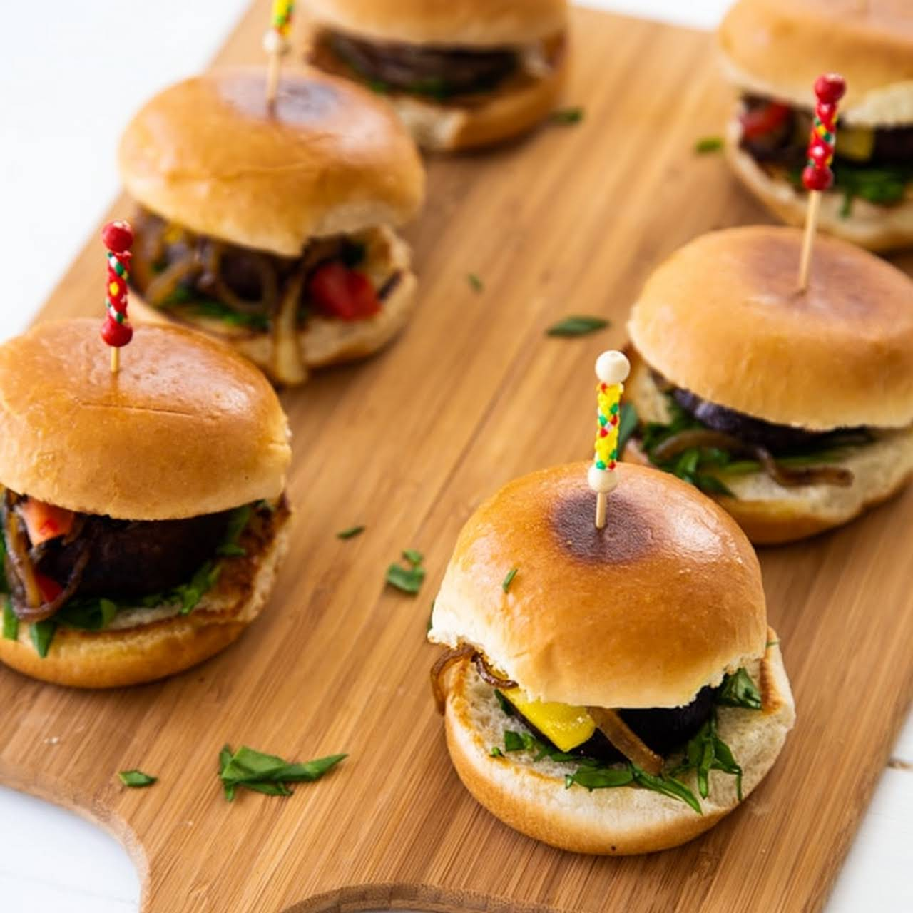

Veggie Sliders

About this Recipe
Veggie sliders offer a tasty and versatile alternative to traditional
meat-based sliders. These small, flavorful burgers are typically made
with a variety of plant-based ingredients such as black beans, lentils,
quinoa, mushrooms, or chickpeas, mixed with herbs, spices, and breadcrumbs
to bind them together. The mixture is formed into patties and cooked until
golden brown and crispy, either on a grill, stovetop, or in the oven.
Veggie sliders can be served on mini burger buns or lettuce wraps and topped
with an array of delicious accompaniments like avocado, tomato, lettuce,
pickles, and a variety of sauces or spreads. They're perfect for vegetarians,
vegans, or anyone looking to incorporate more plant-based options into their
diet, offering a satisfying and flavorful bite in a smaller, snackable size.
Ingredients
- 1 (12 count) package Hawaiian bread rolls (such as King's®)
- ½ cup marinara sauce
- 8 ounces grated mozzarella cheese
- 3 Roma tomatoes, sliced
- ¼ cup chopped fresh basil
- ¼ cup butter, melted
- 2 tablespoons grated Parmesan cheese
- 2 cloves roasted garlic, finely minced
- 2 teaspoons Italian seasoning
Directions
- Preheat the oven to 375 degrees F (190 degrees C). Grease a 9x13-inch pan.
- Cut the rolls in half. Set the bottom halves into the bottom of the prepared pan
and spread with marinara sauce. Place a layer of mozzarella cheese over the marinara
and add a layer of tomatoes over the cheese. Spread basil over the tomatoes and add
the top halves of the rolls.
- Combine melted butter, Parmesan cheese, garlic, and Italian seasoning in a bowl;
stir to combine. Brush over the tops of the sliders.
- Bake in the preheated oven until the insides are gooey and the tops are golden brown,
10 to 15 minutes.